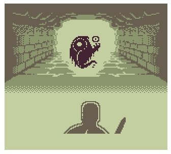
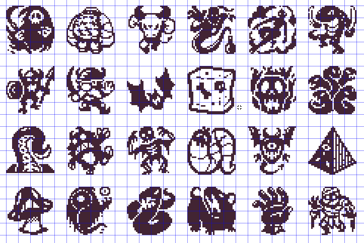
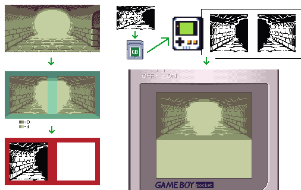

Aplogies for myu absence! I was traveling: in October, I spent 2 weeks in Japan, mostly in Tokyo, where I was sightseeing and taking in my first opportunity to visit another continent. While I was there I took the chance to go to Akihabara and absorb some of their game culture. I didn't bring home any Game Boy souvenirs but I did see a lot of inspiring things. After a year of grinding on Patchy Matchy and Paw Patrol, the trip definetly energized me for my next endeavors.
I've started working on my new Game Boy project Tombs of Gara, a dungeon crawler with "Punch-Out!" style combat. Here are some of the techincal workarounds I've had to do so far...
Like FMT/PM, Gara is going to be a 32 kilobyte game. Why? Because the manufacturing cost is about 30% lower! Larger storage requires a (slightly) more complex PCB, additional resistors, a memory-bank-controller or logic circuit to access the additional spaced use on the ROM chip. As it is right now, cart-assembly is super easy: one ROM chip (thought in the future i may include a 0 Ohm resistor for noise filtering). Another reason is that having a well-defined ceining on the storage clamps the scope of the game. I have to be careful with how I'm using the storage space to the best effect, not only so I can fit the whole game concept in the cart, but so that I'm not succumbing to featrure-bloat and trying to add more and more things.
Because Gara is a LARGER game than FMT/PM, in terms of the number of elements, we have to make them simpler. As such, most of the graphics in Gara are going to be 1-bit-per-pixel, instead of the Game Boy's more standards 2-bits-per-pixel. This means instead of four colors (white, light grey, dark grey, black), we are simply going to define 2 colors for most graphics. This saves on overall storage space.
Most monster graphics were designed as 32x32 black and white sprites. The design challenge here is keeping the shapes and features simple and legible, while adding in enough detail so that the characters look distinct, unique, dynamic, and interesting. These monsters are then batched into groups of 8, and then compressed using GBDK's gb_compress for storage. When the game runs, all the monsters in that batch are decompressed to a buffer, and then the correct monster is pulled to VRAM.
Backgrounds needed a bit of attention too. Full-screen, 2bpp images would be too expensive. A 20x10 (160x80 pixel) image at 2bpp is 3200 bytes (~10% of my total storage!). So I also decided to do the background graphics in 1-bit, though I use some techniques to pack them into the ROM. Firstly, I only store less than HALF of a background image, opting for a vignette border of reused tiles around the outside, reducing the image size to 8x8 tiles or 64x64 pixels. The vignette will be the same for every image, allowing it to fill the screen. The bg is then stored as a black and white image, though I also include an 8-byte palette mask, which tells the Game Boy which colors to use for each tile in the image. This way, I can have more than just black and white used to draw the image, even though each tile in the image can only use two colors. The black-and-white half-image is compressed into the game, then at runtime, loaded to a 1024-byte memory buffer in the Game Boy RAM, where its mirrored beside itself to form the full image without the vignette. As it is being stored in RAM, we have to draw it to VRAM before we can draw it on the screen, so each tile is then palettized according to the palette mask while being expaded to 2-bits-per-pixel and drawn to VRAM. From there, we have a 16x8 tile image ready to be drawn to the screen one tile at a time inside of the vignette, so we can just draw them each in order on the background layer of the screen.
By storing the background with these methods, it costs me about the same ROM space to store a single-background, but less with every successive background, as we are only storing half an image at 1bpp instead of a whole image at 2bpp. What could have been a 3200 bytes on the ROM becomes a 448 bytes, allowing space for more content! These limitations make for some interesting design choices. I opted to avoid the darkest color to make the background more recessed and to allow the monster and player sprites to stand out more. Decidng which tiles should then be lighter and which should be darker, and how to show light coming from the background into the foreground, becomes very tricky. With the cave, the dungeon, and the forest, I tried to make artistic choices that compliment the constraint. A lot of what I end up doing artistically is trying to find the best way to execute while understanding the limitation. Instead of being an obstacle, it becomes a style!
That is all the interesting news I have on this project for now but I'll update on more of these puzzles as I develop the game further.
tad boy color
The maker of the Frog Boy Color just released their open plans for the Tad Boy Color, a miniature Game Boy Color that reflects his design philosophies and aesthetics. Its so tiny! The custom casing is really sharp. You can watch him explain his design and build process in the video below.
I'm currently doing a fundraiser through my twitch channel for Greater Edmonton Animal Rescue Society, with the goal of raising $1000 for them by the end of 2024. I've got some prizes to give away to sweeten the pot, including a custom modded Game Boy Pocket, and copies of Fydo's Magic Tiles.
GEARS is a local animal welfare charity that finds homes for animals in need, and they adopted my best friend Sam to me in 2023. I'm just supporting them in their mission so they can continue to find more homes like this for dogs like him.
To be eligible for the giveaway, just follow my twitch account (so I can send you a whisper in case you win), and donate at least $5 through the 'donate to charity' button on my twitch page. You must be over the age of majority in your country, you must ok with giving me a deliverable address to ship you your gift, and from a region where giveaways like this are legally permitted.
If you're a Game Boy geek like me, you'll get a kick out of Game Boy Demakes. They take modern games, redraw the graphics within the Game Boy limitations, and then assemble them into mock ups of what the game would have looked like had it been released for Game Boy! Pretty fun.
A magical...and magnificent fairy tale...Dark Cloud for Gameboy!
— Game Boy Demakes (@GameboyDemakes) June 30, 2023
| #pixelart | #ドット絵 pic.twitter.com/Khii7jSEwD
bookmarked in autumn
Rogue from X-Men pic.twitter.com/zAd4doKADW
— Lux (@thisislux) September 12, 2024
HI! I'm Matt! I'm coding a brand new platformer for the NES, inspired by Super Mario Bros 1 + 3. It's called... Super Sunny World 🌞 Follow me to get updates as it approaches alpha, and please repost to let other folks know about it! 📷 #nesdev #gamedev #screenshotsaturday
— Matt Hughson (@mhughson.bsky.social) October 20, 2024 at 11:41 AM
[image or embed]
Finalising my palettes for the boss sequences! 🎨 We have an amazing handful of boss music by @lena.fyi, Hiroki Kikuta, and Heosphoros 👏 #gamedev #nesdev
— Ted (@vontheodore.bsky.social) November 16, 2024 at 10:04 AM
[image or embed]
oilman #pixelart
— Drew (@drewsnatcher.bsky.social) December 24, 2023 at 8:22 AM
[image or embed]
Further compressed my tiny #Metroidvania engine, now just 470 chars and 398 compressed bytes, 319 bytes without the random map generator. Now to see what kind of handmade world and mechanics I can fit in the other 705...#Pico8 #Pico1k pic.twitter.com/UjjA02F2YX
— JadeLombax (@JadeLombax) September 2, 2024
Pumpkin knight for #pixel_dailies ^_^ @Pixel_Dailies My heart wants to make a little game for Halloween but my clock says no :c #pixelart #8bit #retro #IndieGameDev pic.twitter.com/AyyxKJVIId
— Christopher Pariano (@ChrisPariano) October 7, 2018
1986 Sports Watchman FD-45A pic.twitter.com/18kbeBXc4X
— Obsolete Sony (@ObsoleteSony) September 24, 2024
If you'd like your game or project featured here, get in touch!
Thanks for reading! Reach out or tag me on social media to @ohnotomsutton or reply to your newsletter email to let me know what you think or to suggest content. I'd love to get more game dev, art, and animation stuff! The goal is to have an assembly of fun, interesting or enlightening things for the first of the month, every month.
Subscribers as of 17/11/2024: 32.